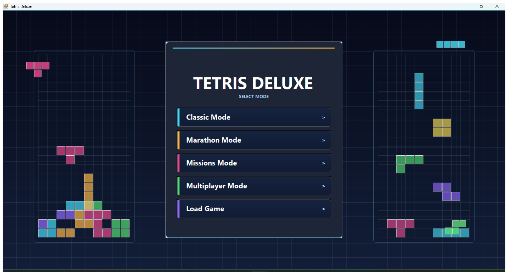
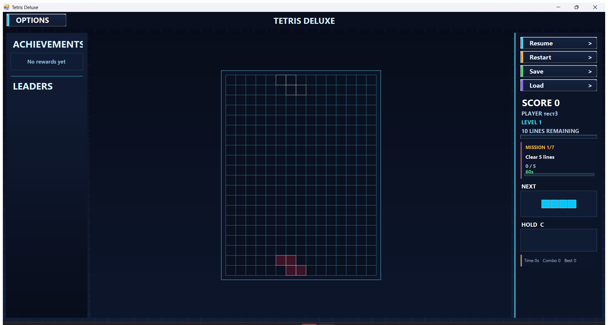
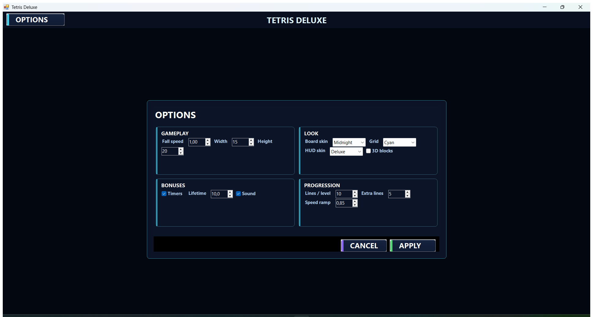
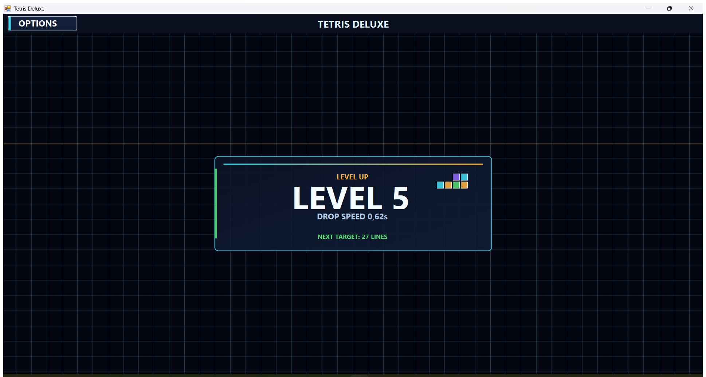
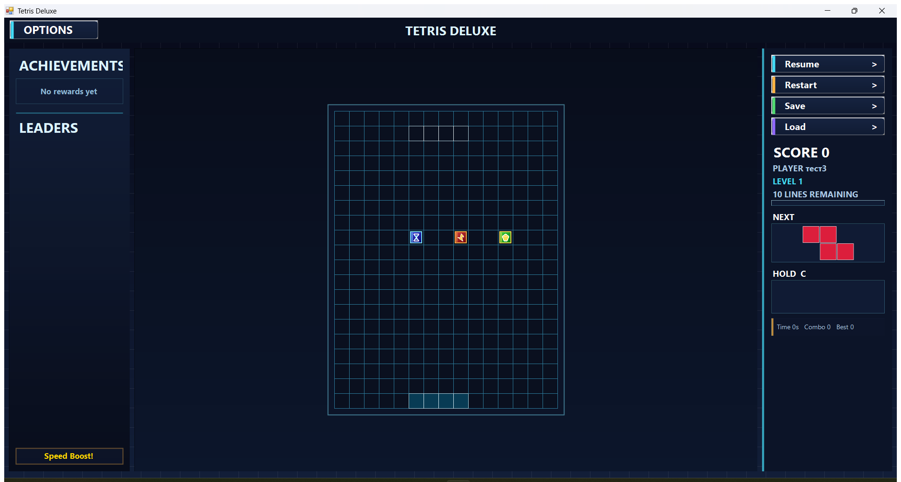
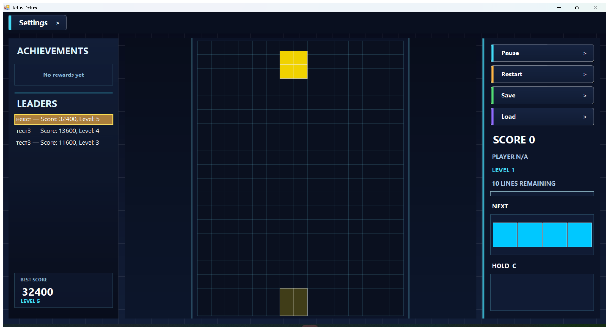

Gallery





Feedback Wanted
Try the game and open an issue for bugs, UI feedback, mission ideas, or gameplay balance suggestions.
Open Feedback IssueC# Desktop Game
A custom WinForms Tetris project with missions, power-ups, save/load, level transitions, generated music, and plugin-based gameplay extensions.






Try the game and open an issue for bugs, UI feedback, mission ideas, or gameplay balance suggestions.
Open Feedback Issue